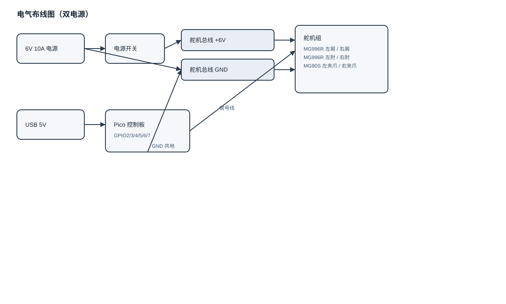
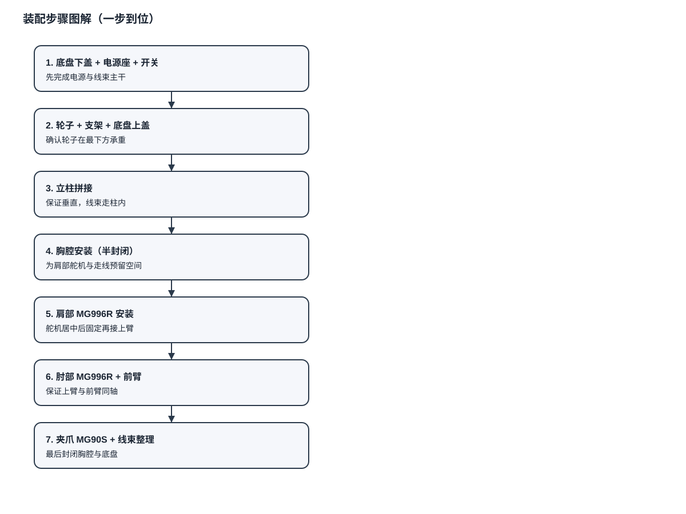

电气布线图 + 真实装配图解（配图版）
1. 电气布线图

- 舵机用 6V 供电，Pico 用 USB 5V 供电。
- 必须共地：Pico 的 GND 与舵机电源 GND 相连。
- 不要从 Pico 直接给舵机供电。
1.1 底盘驱动（可选，TB6612FNG）
用途：底盘左右转向（双电机差速）。
接线（Pico -> TB6612FNG）：
- STBY -> GPIO8
- AIN1 -> GPIO9
- AIN2 -> GPIO10
- PWMA -> GPIO11
- BIN1 -> GPIO12
- BIN2 -> GPIO13
- PWMB -> GPIO14
TB6612FNG 其余接线：
- VM -> 电机电源（6V 或 2S 电池）
- VCC -> Pico 3.3V
- GND -> 共地
- A01/A02 -> 左电机
- B01/B02 -> 右电机
说明：电机电源与舵机电源可分开，但必须共地。
2. 线序表（锁定版）
- 左肩 MG996R -> GPIO2
- 左肘 MG996R -> GPIO3
- 左夹爪 MG90S -> GPIO4
- 右肩 MG996R -> GPIO5
- 右肘 MG996R -> GPIO6
- 右夹爪 MG90S -> GPIO7
线色建议：
- 红线：+6V
- 黑/棕线：GND
- 黄/橙线：信号
3. 线束整理方案
- 电源线用“主干 + 分支”方式，主干从底盘中心上行。
- 肩部左右分叉进入上臂内侧，肘部预留回环。
- 线束与旋转部位保持 3~5 mm 余量，避免拉扯。
- 线束穿过孔位时加护线圈或胶管。
4. 装配步骤图解

5. 快速检查清单
- 舵机居中后再固定
- 肩部、肘部轴线对齐
- 线束有回环余量
- 舵机电源与 Pico 共地
- 不从 Pico 给舵机供电
- 低速测试通过
6. 可选单电源方案（需要降压模块）
- 6V 电源先降到 5V 再给 Pico。
- 保证电源模块能提供足够电流。
- 仍然需要共地。
生成时间：2026-03-25（Asia/Shanghai）